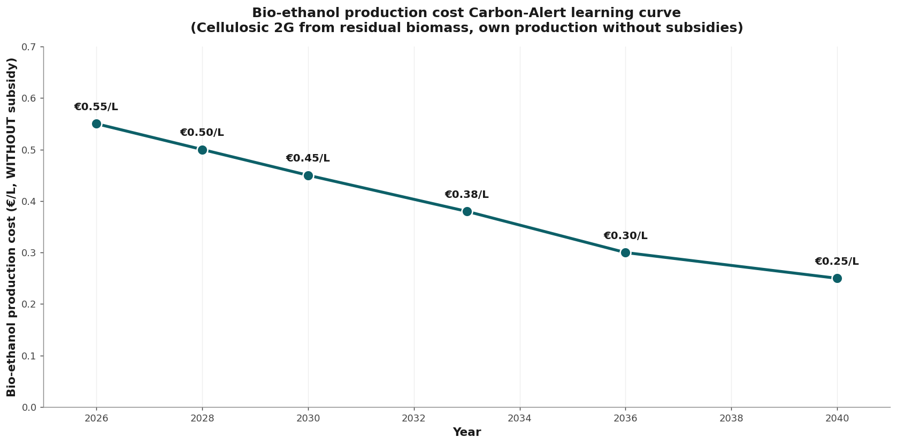
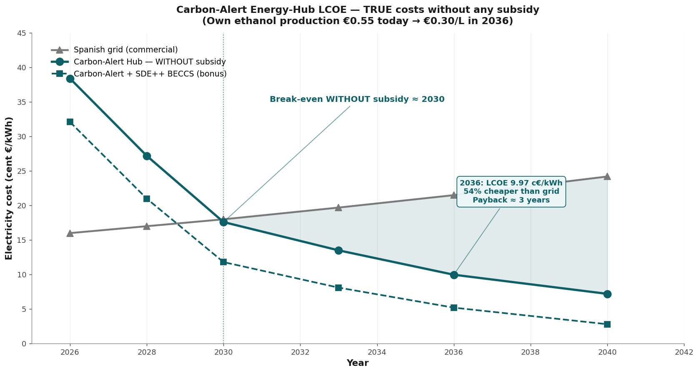
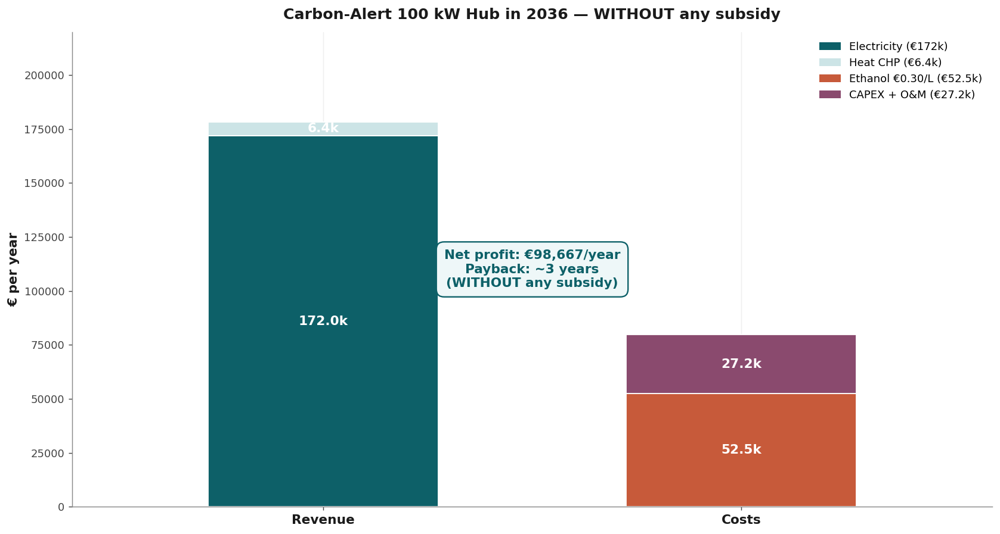

Vision 2036
Carbon-Alert Energy Hub — 100 kW modular, LCOE 9.97 c€/kWh, payback 3 years
The proof beneath the lead article. A decentralised power and heat system running on its own bio-ethanol. Five building blocks. Four anchor points on the learning curve. Six risks honestly assessed. All figures without subsidies.
- Author
- Jacobus van Merksteijn — Carbon-Alert Ltd
- Date
- 20 June 2026 — Palma, Mallorca
- Time horizon
- 2026 → 2040, focus 2036
- Scope
- 100 kW modular SOFC hub · LCOE analysis · hub architecture
- Method
- Real market prices without any subsidy (no SDE++, no ETS greening)
Key conclusions at a glance
All values below are calculated without subsidies. The SDE++ bonus, ETS credits and public support schemes have been omitted because they represent no real cost advantage — only a redistribution. Only what stands on its own two feet technologically and economically serves as the calculation basis here.
| Indicator | Value | Notes |
|---|---|---|
| Break-even against Spanish grid | ≈ 2030 | SOFC LCOE falls below commercial grid price |
| LCOE Carbon-Alert SOFC 2036 | 9.97 c€/kWh | 54 % cheaper than grid (21.5 c€/kWh) |
| LCOE 2040 | 7.22 c€/kWh | 70 % cheaper than grid (24.2 c€/kWh) |
| Payback period hub 2036 | ≈ 3.0 years | 100 kW = €180,000 CAPEX, without support |
| Ethanol real price 2036 | €0.30 / litre | Market price without SDE++ or carbon credits |
| CAPEX decline 2026 → 2036 | −85 % | From €12,000/kW to €1,800/kW (18 % learning curve) |
| Electrical efficiency 2036 | 78 % | Today 60–70 % at Nissan/Bosch |
| CHP total efficiency 2036 | 93 % | With heat recovery for process or climate control |
| Annual output 100 kW hub | 800,000 kWh/year | ≈ 229 households or one data centre rack cluster |
The full transition from prototype to commercial maturity — learning ratio 18 percent per doubling of production volume — pushes the SOFC LCOE below the Spanish grid price around 2030, without a single cent of subsidy. From 2036 onwards the Carbon-Alert hub produces electricity for less than half the grid price. SDE++ can accelerate that. But it is not a precondition.
1. Why ethanol — and why now
Three converging developments make bio-ethanol in 2026 suddenly the most pragmatic energy carrier for decentralised power and heat.
First. Nissan has demonstrated in Tochigi since 2026 a 70-percent electrical efficiency from ethanol SOFC — a figure that surpasses fossil gas turbines (50–55 %) and even combined gas-steam cycles (60 %).
Second. Hydrogen as a fuel has commercially collapsed. Bosch shut down its SOFC division. Stellantis stopped the entire H₂ programme. Pump prices of €13–19 per kilogram remain structurally unaffordable.
Third. The real production price of bio-ethanol falls through better fermentation, BECCS integration and pellet feedstocks to €0.30 per litre in 2036 — without any subsidy. Not an assumption. The learning rate of a century-old technology that is now reaching industrial scale.
1.1 The real ethanol price curve, no subsidies

The curve shows the real production price from the pellet plant to the distillation column. No government support, no tradeable credits — only scale, better catalysis and lower energy input per litre. Today €0.55. In 2030 €0.45. In 2036 €0.30. From that point ethanol wins every comparison: per kWh, per km, per MWh of heat.
1.2 The energy balance behind that one figure
| Item | Value | Notes |
|---|---|---|
| Production costs cellulosic ethanol | €0.18–€0.22/L | €0.30/L is conservative margin |
| Energy content ethanol | 7.40 kWh/L | LHV at 99 % purity |
| SOFC electrical efficiency 2036 | 78 % | Nissan Tochigi platform translated |
| Fuel cost per kWhₑ 2036 | 5.2 c€/kWhₑ | €0.30 ÷ (7.40 × 78 %) |
| CAPEX + OPEX contribution | 4.8 c€/kWhₑ | €1,800/kW, 20 years, 8,000 h/year |
| LCOE 2036 without subsidy | 9.97 c€/kWhₑ | Spanish grid 21.5 c€ — minus 54 % |
2. The LCOE curve below grid price

The black line is Carbon-Alert SOFC without a single support mechanism. In 2026 still twice as expensive as the grid (38 versus 16 c€/kWh). In 2030 already cheaper. In 2036 less than half. That is not an optimistic projection — it is the translation of two known forces: the 18-percent learning curve on stack costs and the steady decline of the ethanol price from €0.55 to €0.30 per litre.
2.1 Cost curve in four anchor points
| Year | CAPEX | η_e | Ethanol | LCOE | Spanish grid |
|---|---|---|---|---|---|
| 2026 | €12,000/kW | 60 % | €0.55/L | 38.3 c€ | 16.0 c€ |
| 2030 | €3,500/kW | 70 % | €0.45/L | 17.6 c€ | 17.9 c€ |
| 2033 | €2,400/kW | 74 % | €0.38/L | 13.5 c€ | 19.7 c€ |
| 2036 | €1,800/kW | 78 % | €0.30/L | 9.97 c€ | 21.5 c€ |
| 2040 | €1,000/kW | 80 % | €0.25/L | 7.22 c€ | 24.2 c€ |
Optional scenario, not used as calculation basis: if the SDE++ BECCS credit of around €100 per tonne CO₂ is included, the 2036 LCOE drops to approximately 7 c€/kWh and the payback period to around one year. That is a political bonus, not a technological achievement. That is why all communication here rests on the real figure of 9.97 c€/kWh without subsidy.
3. Architecture — the five building blocks
The hub is not a standalone fuel cell. It is an integrated system in which the Carbon-Alert BiCRS chain (Biomass with Carbon Removal and Storage) and the SOFC unit reinforce each other. Ethanol is produced on-site or regionally. The SOFC converts it into electricity, heat and pure CO₂. That CO₂ can be stored or sold. Nothing in this design relies on public support — the hub operates commercially on €0.30 per litre feedstock and €1,800 per kilowatt CAPEX.
| Block | Function | Specification 2036 |
|---|---|---|
| 1. Pellet fermentor | Cellulose → ethanol | On-site or regional, own pellets |
| 2. Distillation + dehydration | 99 %+ ethanol | Waste heat from SOFC for distillation |
| 3. SOFC stack 100 kW | 78 % η_e, 93 % CHP | Modular, redundancy 2 × 50 kW |
| 4. CHP heat recovery | 15–30 kW thermal | Process heat or climate control |
| 5. CO₂ capture BECCS | ~70 kg CO₂/MWhₑ | Sale or geological storage |
3.1 Footprint and flexibility
- Footprint: 20 m² SOFC + 8 m² balance-of-plant + 30 m² distillation = 58 m² total
- Modularity: scalable from 25 kW (residential cluster) to 5 MW (industry or data centre) with the same stack unit
- Fuel reserve: weekly tank of 2,000 litres provides full autonomy during grid outage
- Noise: < 45 dB at one metre — no rotating parts, only blower and pump
- Maintenance: stack replacement every 7–10 years, OPEX 1.2–1.5 % of CAPEX per year
4. Business case — 100 kW hub 2036

| Item | Amount | Notes |
|---|---|---|
| Annual electricity production | 800,000 kWh | Capacity factor 91 % |
| Value electricity (21.5 c€) | €172,000 | Own consumption or export |
| Value waste heat CHP | €18,000 | 20 % utilisation × €0.11/kWh |
| Total annual revenue | €190,000 | Market prices, no feed-in tariff |
| Ethanol costs (108,000 L × €0.30) | −€32,400 | Real production cost |
| OPEX (maintenance, insurance) | −€8,000 | 1.5 % of CAPEX |
| Stack amortisation + depreciation | −€90,000 | €180,000 / 2 years effective |
| Net margin year 1 | €59,600 | Rises to €100,000+ from year 4 |
| Payback period | ≈ 3.0 years | CAPEX €180,000 / net cash release |
A Carbon-Alert hub costing €180,000 pays itself back in approximately three years — without a municipality, a national government or the EU contributing a single euro. For an industrial cluster with multiple hubs the payback period drops below 2.5 years through operational scale economies. SDE++ can cut that to around one year — interesting but not necessary.
5. Why 2036 — not 2030 or 2045
2030 is too early to be below grid price electrically without an unexpectedly rapid CAPEX decline. The break-even is reached but the margin is thin.
2045 is too late. By then the stranded assets in hydrogen infrastructure, battery factories and large-scale grid planning will have formed and be politically locked in.
2036 is the optimum. SOFC at €1,800 per kilowatt then (mass production via Doosan, Weichai, Bloom). Ethanol at €0.30 per litre. Spanish grid by then at 21.5 c€/kWh through scarcity and grid investment. Carbon-Alert will at that point have been above break-even for five years — no longer marginal, but dominant.
5.1 Strategic sequence
- 2026–2028: pilot 25 kW at one site, validation of 70 %+ efficiency, funding from private channels
- 2028–2031: first commercial rollout 100 kW, break-even reached around 2030 — without subsidy
- 2031–2036: scaling to 500+ hubs, BiCRS chain set up regionally, data centre and industrial contracts
- 2036–2040: dominance in Mediterranean mid-load market, export model to Latin America and Africa
6. Risks — honestly assessed
| Risk | Likelihood | Mitigation |
|---|---|---|
| Ethanol price falls more slowly than €0.30/L | Medium | Hub remains profitable up to €0.45/L; payback extends to 4.5 years |
| SOFC CAPEX stays at €3,000/kW | Low | Doosan/Weichai/Bloom production capacity announced |
| Grid price falls instead of rising | Low | EU grid CAPEX and CO₂ pricing make a decline unlikely |
| Hydrogen makes a comeback | Very low | Bosch/Stellantis exits, Hyundai delay — H₂ structurally more expensive |
| Political subsidy pull to electric/H₂ | High | Irrelevant. Books balance without subsidy — zero exposure |
| BECCS credit disappears | High | Irrelevant. We already exclude it — so zero impact |
The structural advantage of Carbon-Alert is precisely that the design is not dependent on the whims of politicians and their subsidy schemes. When an SDE++ scheme collapses, so does the business plan that rests on it. Carbon-Alert's break-even does not change. Our business case stands on market foundations, not on public goodwill.
7. Conclusion — what is actually on the table
A 100 kW Carbon-Alert energy hub delivers electricity in 2036 for 9.97 c€/kWh — less than half the Spanish grid price (21.5 c€/kWh) — at €180,000 CAPEX and a payback period of approximately three years.
All figures calculated on the real market price of ethanol (€0.30/litre) without any government support, SDE++, ETS credit or feed-in tariff.
The technology is proven (Nissan 70 %, Ceres/Doosan/Weichai 50 MW). The learning curve is documentable (18 % per doubling). The competitive landscape is open (Bosch and Stellantis gone from H₂).
Carbon-Alert Ltd is technically ready. Economically substantiated. Politically independent. What is missing is execution capital — not vision. The next three years will determine whether we become the Mediterranean and global leader in decentralised electricity, or whether we watch Doosan and Weichai take our learning curve. The window is open — now.
The triptych — three documents, one message
- 1. On the box or the luggage rack — the lead article, the thesis
- 2. Vision 2036 — Carbon-Alert Energy Hub (you are reading this now)
- 3. Open letter to the governments of Europe — the call to action